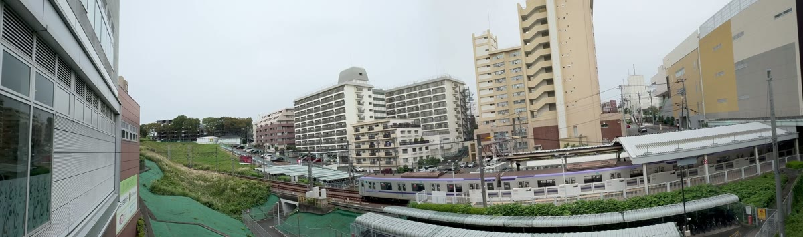
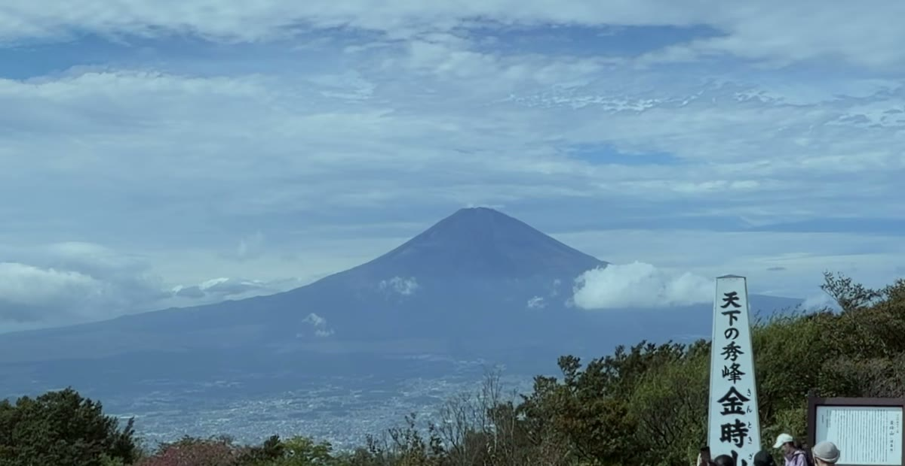
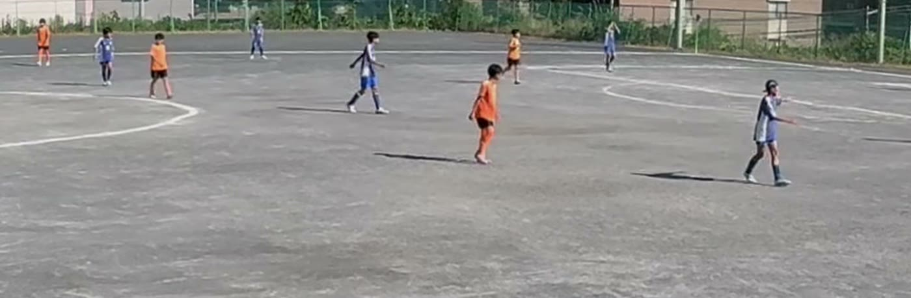

2台のiPhoneを三脚に並べて置くだけ。左右の映像が1本の超ワイド動画になります。広いまま撮っておいて、見るときに寄れます。
App Store 準備中金時山の山頂から。2台のiPhoneで撮って、そのまま結合した映像です（加工していません）
運動会や発表会では、引きで全体を撮るか、寄って我が子を撮るか、カメラ1台だと選ばなければなりません。panovi は広いまま撮っておいて、見るときに拡大します。左右それぞれを4Kで撮るので、1台で同じ広さを撮るより細かく残ります。


三脚に据えたら、あとは触りません。カメラを向ける操作が要らないので、こういうことが起きません。
「ちゃんと写っているかな」と画面を気にしながら応援しなくて済みます。決定的な瞬間は、必ず画面の中に入っています。
山頂から富士山まで、1台では入りきらない景色も、流れる雲ごと1本に収まります。上の写真は金時山の山頂で撮ったものです。特別な日だけでなく、散歩や旅行のちょっとした記録にも使ってください。
360度カメラは、画素を全方位に分けて使います。そのぶん一方向あたりは粗くなり、遠くの被写体は小さくしか写りません。panovi は撮りたい方向にだけ画素を使います。だから広く撮っても、迫力のある大きさのまま残せます。
サッカーやラグビーなら、三脚に据えて逆サイドまで入れたまま、最後まで撮り続けられます。3台目のiPhoneをリモコンにすれば、カメラに触れずに録画を始めたり止めたりできるので、自分は観戦に集中できます。
実際の試合を panovi で撮って結合したものです。カメラは三脚に置いたまま、一度も動かしていません。両ゴールも両ベンチも、ずっと画面の中にあります。
この動画は実物より粗いです。ページの読み込みを軽くするため、横1920pxに縮小しています。 実際の結合結果は 7312 × 2160（横幅で約3.8倍、画素数で約14倍）。
下は、同じ場面を元の解像度から原寸のまま切り出したものです。これが本当の精細さです。

7312×2160 から 1400×460 を原寸で切り出し（拡大していません）
帰り道の車や電車の中で結合しておけば、家に着いたころには1本の動画ができています。クラウドにアップロードして待つ必要はありません。
1台でQRコードを出し、もう1台で読み取る。これだけです。
2台を三脚に並べます。画面が重なり具合を教えるので、見ながら角度を合わせます。
録画して結合。できた動画はカメラロールへ保存できます。
基本は無料で使えます。課金に当たるのは「2分以上の長い結合」だけです。
| 撮影（録画） | 何分でも・何本でも無料 |
|---|---|
| 端末どうしの転送 | 無料 |
| 置き方の確認・3秒の確認 | 無料 |
| 2分未満の結合 | ずっと無料・回数無制限 |
| 2分以上の結合 | 無料で3回 → そのあとは買い切り ¥8,000 |
月額ではありません。一度のお支払いで、そのあとはずっと無制限です。専用の機材も要りません。必要なのは、すでにお持ちのiPhone 2台と三脚だけです。